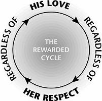

Throughout this book I have emphasized that if the husband and wife are both people of basic goodwill, they can use Love and Respect principles to make a bad marriage into a good one and a good marriage into a great one. I have stressed the idea that you must trust your spouse; you must be the first to act on these principles, and not withhold what your spouse needs most in order to get your spouse to give you what you need most. We’ve also seen in preceding chapters that not only does God command men to love their wives and women to respect their husbands, but that we must do this unconditionally.
But what if your husband doesn’t show you love when you show him respect? What if your wife doesn’t show you respect as you show her love? If you get no results from practicing Love and Respect, why bother? The Rewarded Cycle gives you the answers to these questions. In a real sense, the Rewarded Cycle is the most important part of this book. Read on, and you will see why.